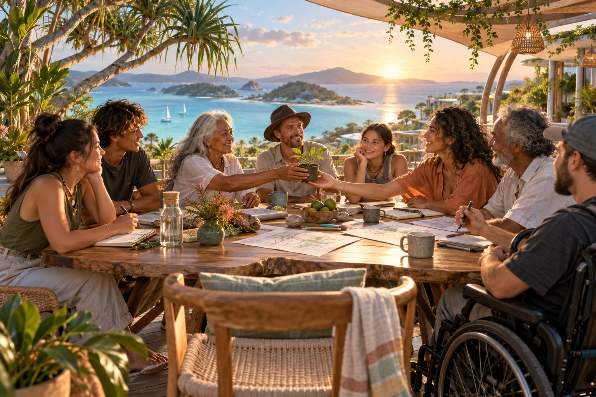

Adapted from the 23 September 2026 plan. The proposed system is open to development with participants.
Start small enough to learn
The exploration in the software chapter and the community pilot would inform each other. The twelve-week sketch below is an invitation to plan with hosts and participants. Food, creativity, AI learning and care offer connected starting points; people joining may bring others. Dates, roles and sequence would develop around those conversations and available resources.

Weeks 1 and 2: find the first hosts
The offered Oodgeroo introductions provide an opening for conversations with interested organisations. Local community and cultural participation, young people, visitors, carers and people already organising useful activities would bring different perspectives. An initial conversation might ask what would make their existing work easier or more enjoyable. Informal contribution and home life offer key starting points alongside organised activities.
Early conversations would begin with what hosts and participants are already carrying: workload, costs, frustrations and the things they wish were easier. From there, they might choose a small, useful interaction to try, such as finding help, organising an activity or recognising overlooked care. The C-hour idea, information sharing and verification would develop through that experience. Coordination, support and any costs deserve open discussion, especially where another unpaid responsibility would make life harder.
Weeks 3 to 6: try a connected adventure
One possibility is a gathering with several ways to participate, connected to a few recurring activities. A shared table, a creative story and practical AI learning might fit together naturally. The people involved would shape that combination and how participants might remain connected afterwards.
Trying the agent interactions during real activities would help reveal how contribution, recognition and personally chosen sharing fit together. Financial inputs would stay distinct from C-hours. Participants’ responses to consent changes, private participation and interrupted connectivity would guide revisions. What they enjoyed, what felt difficult and whether they want to return would matter more than completing the original sequence.
Weeks 7 to 12: make useful parts repeatable
People returning to the pilot might enjoy welcoming newcomers, or prefer to continue in other ways. Their experiences would help identify which activities grow relationships and which, if any, overburden hosts. A shared account of what happened, shaped with those involved, could include unresolved questions and changes of direction.
Activity descriptions, contacts, resources, recognition ideas and lessons learned could become a shared reference for people and their agents. A neighbouring group trying that material would help discover what is useful and what needs local reinvention.
Months 4 to 12: connect the local network
Interest from additional hosts across Minjerribah, other islands and Redlands would open the next conversation. Ready S.E.T. Co-op learning and paid-work pathways, digital twin activities and De-Slop projects offer possible connections. Specialist health research and infrastructure would develop through the people and expertise involved, with their own resources and ideas.
Before spreading further, hosts and participants would reflect on their experience: what was useful, who wants to continue, what became burdensome and what support another group would need. Hour totals tell only part of that story. Their judgement would shape whether to expand, revise an approach or try a different direction.
Grow across Australia and Oceania
Other communities are invited to take what is useful and reshape it in their own language, relationships and priorities. Comparing approaches would help people discover which shared practices support cooperation and where differences matter. The Sensorium offers a way to explore those connections from each person’s L0 foundation.
GAJRA Earth is imagined as a network of locally shaped associations and projects focusing on empowering Joyful Responsible Abundance on Earth. The people involved would develop their own ways of taking responsibility, explaining decisions and revisiting them. The proposal includes no founder veto or equivalent reserved power.
Keep a larger horizon
Longer research paths include materials and making, clean energy, space-weather observation, civilisation continuity and the Kardashev galactic games. These connect ambitious science and creative exploration with learning that people can begin now. Each project simply needs a clear question, evidence, capable collaborators and a next experiment. A community can keep a large horizon while knowing exactly what it has demonstrated.
The proposed July 2035 gathering for the fiftieth anniversary of Live Aid offers a creative horizon: three days themed Past, Present and Future, connecting art, music, reflection and collective participation. It is an ambition to organise towards, not a booked event. The hope is to spend those years creating useful work worth celebrating.